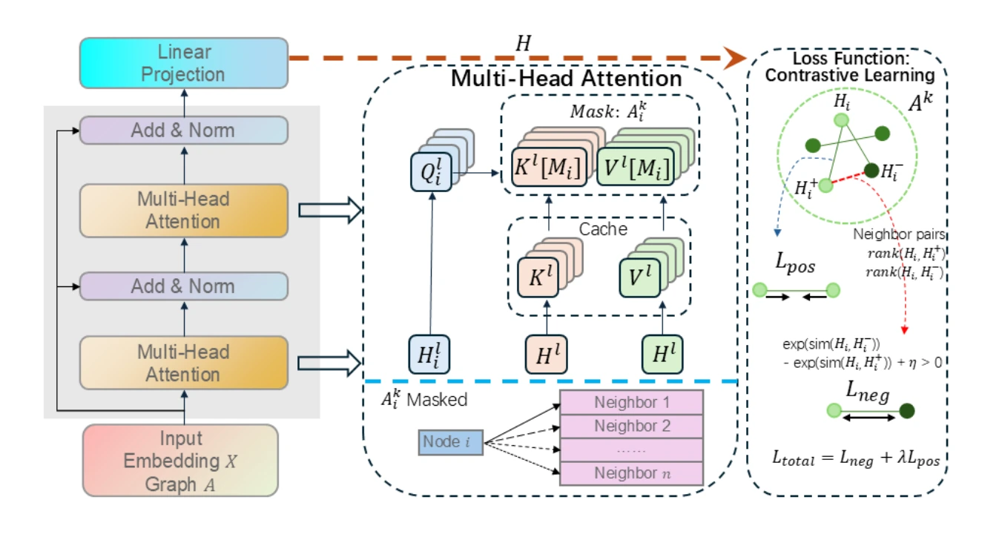

Attention Beyond Neighborhoods: Reviving Transformer for Graph Clustering
IEEE Transactions on Circuits and Systems for Video Technology, 2026
AGCN embeds structure-aware attention into the graph, combining long-range information, a KV cache, and pairwise-margin contrastive learning for graph clustering.